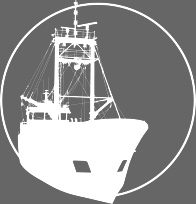

PST saw the need and developed the solution.
The new 52.5-feet-long cars, 12.5 feet shorter than the older cars, handle loads of 240,000 pounds, compared to the older limit of 180,000 pounds. The new cars are built with safety uprights to eliminate slab shifting or rotating, often referred to as "helicopting."
These improvements offer many advantages for both the operator and the public as they increase capacity, production, and safety, while shortening overall train lengths. Through BNSF's special investment, these new cars allow more slabs per train, more weight per car and more safety for the community. PST also invested in new tractors and equipment to support the higher production and capacity of the cars.
Interactive programs train for safety.
The new 52.5-feet-long cars, 12.5 feet shorter than the older cars, handle loads of 240,000 pounds, compared to the older limit of 180,000 pounds. The new cars are built with safety uprights to eliminate slab shifting or rotating, often referred to as "helicopting."
A safe and green environment.
These improvements offer many advantages for both the operator and the public as they increase capacity, production, and safety, while shortening overall train lengths. Through BNSF's special investment, these new cars allow more slabs per train, more weight per car and more safety for the community. PST also invested in new tractors and equipment to support the higher production and capacity of the cars.
Forest products demand careful handling. To avoid damage yet maximize production during vessel discharge, newsprint is moved by vacuum lifts and plywood is handled with lumber blades as they are transported into warehouses for storage, sorting and truck delivery.
PST currently has a total of five spacious warehouses (close to half-a-million square feet), ideal for weather-sensitive forest products, such as newsprint, linerboard, and plywood because even in Southern California, covered storage is needed to protect these shipments from occasional weather elements.
Our large warehouses’ interiors accommodate multiple sub-sorts of cargo for customized delivery instructions. Truck loading bays are located along the entire length of these sheds, making delivery to trucks quick and efficient.
PST’s stock of equipment includes:
|  | |